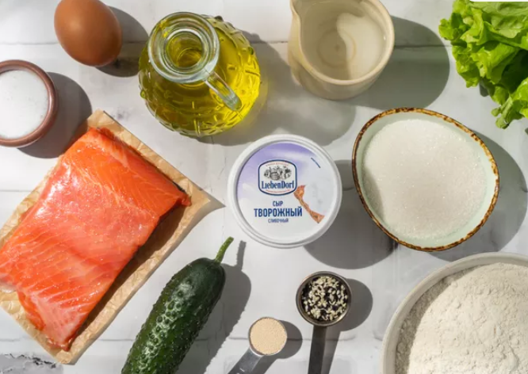
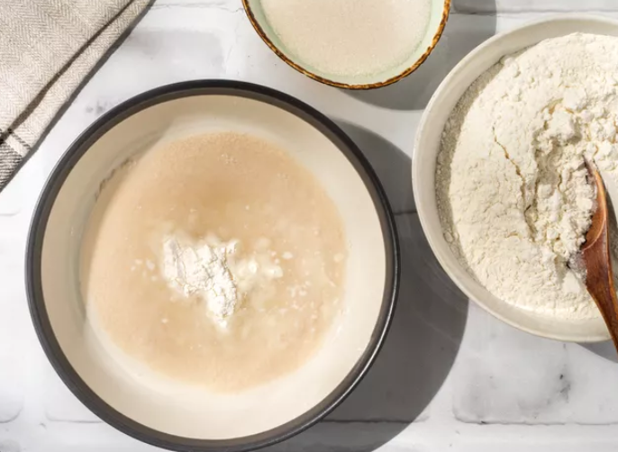
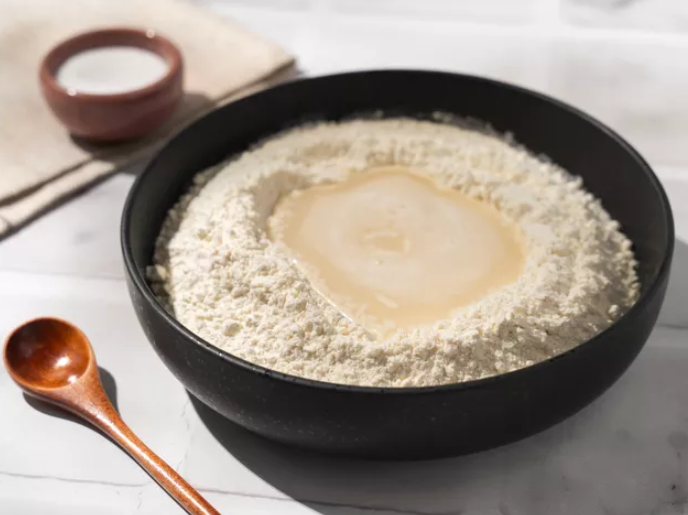
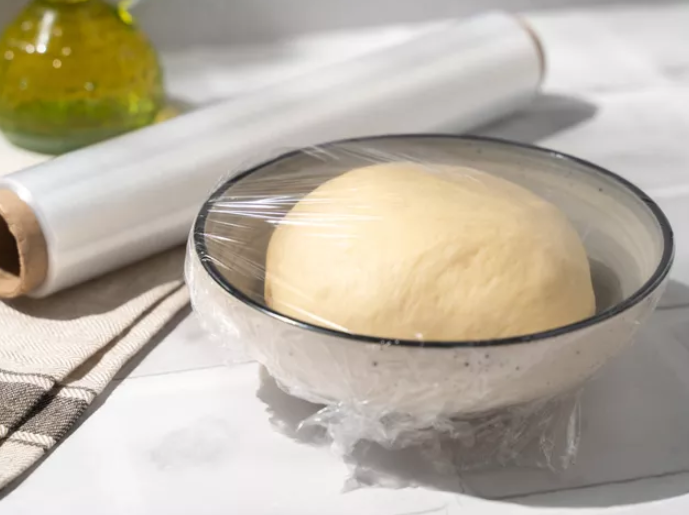
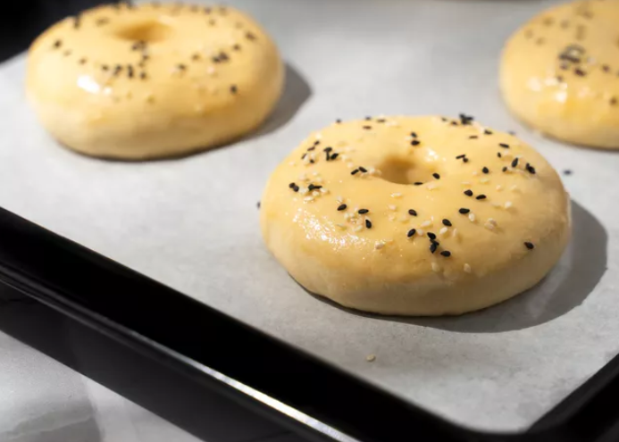
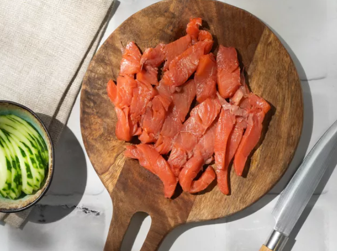
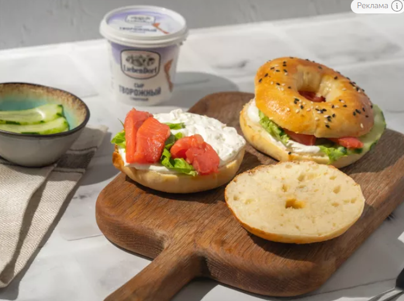
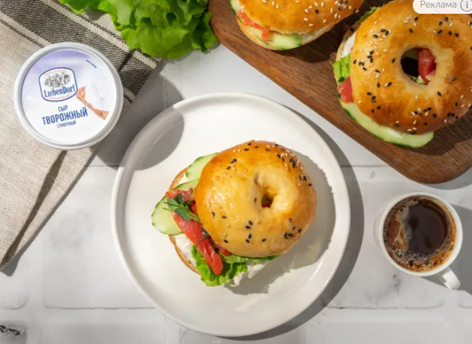

| Каллории | Белки | Жиры | Углеводы |
| 219,41 кКал | 8,71 грамм | 6,1 грамм | 32,07 грамм |

Просейте муку. Застелите противень пергаментом. Помойте овощи и зелень. Почистите репчатый лук. Подготовьте кастрюлю.

Нагрейте 50 мл воды до 40°С. Смешайте ее с дрожжами. Добавьте 2 ст.л. муки и 2 ст.л. сахара. Тщательно перемешайте и оставьте на 15 минут.

Смешайте в глубокой миске оставшуюся муку с солью. Сделайте в центре углубление и влейте туда дрожжевую опару. Начните замешивать тесто.

Влейте оставшуюся воду и замесите руками густое однородное тесто. Вымешивайте его сначала в миске, а потом на столе до тех пор, пока оно не перестанет липнуть к рукам. Смажьте миску растительным маслом. Положите в нее тесто. Смажьте его верхушку маслом. Накройте полотенцем и оставьте в теплом месте на 1 час для подъема.

Обомните тесто и разделите его на 8–10 равных частей. Сформируйте из каждой части шарик. Сделайте в середине каждого шарика дырку, чтобы получились пончики. Выложите их на разделочную доску или плоскую тарелку, припыленную мукой. Накройте полотенцем и оставьте на 20–30 минут. Переложите бейглы на противень. Взбейте в небольшой миске куриное яйцо и смажьте им заготовки, посыпьте их кунжутом и отправьте в разогретую до 180°С духовку на 20–25 минут.

Нарежьте рыбу тонкими ломтиками, огурцы — кружочками.

Когда бейглы полностью остынут, разрежьте их пополам. Смажьте срезы творожным сыром. Положите на нижнюю часть лист салата, немного семги и огурца. Накройте верхней половинкой бейгла.

Красиво сервируйте бейглы и подайте их вместе с любимым напитком.
Больше рецептов на Food